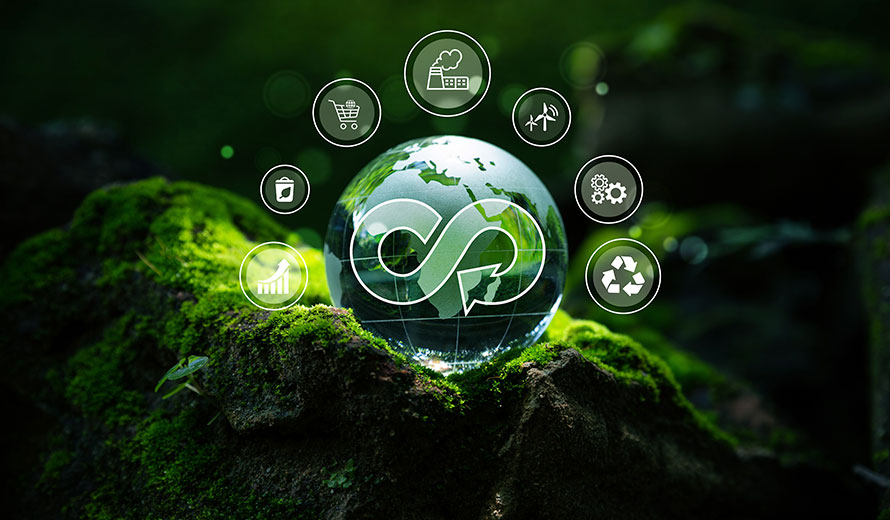

¿CUÁL ES LA IMPORTANCIA DE LAS 7R?
Las 7 Rs son fundamentales para la sostenibilidad, ya que ayudan a reducir el impacto ambiental y fomentan la economía circular. A través de acciones como rediseñar productos con materiales reciclables, reducir el consumo innecesario, reutilizar objetos para darles un nuevo uso, reparar en lugar de desechar, renovar artículos para prolongar su vida útil, recuperar materiales para reincorporarlos en procesos productivos y reciclar residuos para convertirlos en nuevos productos, se logra un mejor aprovechamiento de los recursos naturales. Implementarlas en la vida cotidiana permite disminuir la contaminación, ahorrar dinero y generar conciencia ecológica en la sociedad, contribuyendo a un futuro más sostenible y responsable.

La siguiente tabla resume la información de esta página acerca de las 7R:
| Concepto | Descripción | Ejemplos |
|---|---|---|
| Reducir | Disminuir el consumo de productos y recursos. | Uso de botellas reutilizables, menos envolturas plásticas. |
| Reutilizar | Dar un nuevo uso a los productos sin desecharlos. | Uso de ropa de segunda mano, reparación de muebles. |
| Reciclar | Transformar residuos en nuevos productos. | Separación de basura, reciclaje de papel y plástico. |
| Rechazar | Evitar productos que generan contaminación. | No usar bolsas plásticas, evitar productos desechables. |
| Reparar | Arreglar productos en lugar de desecharlos. | Reparar electrodomésticos, coser ropa dañada. |
| Rediseñar | Modificar productos para que sean más sostenibles. | Diseñar envases biodegradables, mejorar eficiencia energética. |
| Reeducar | Crear conciencia sobre el impacto ambiental. | Campañas educativas, talleres ecológicos. |
¡Video interesante acerca de las 7R!
INTERIOR - SANTE